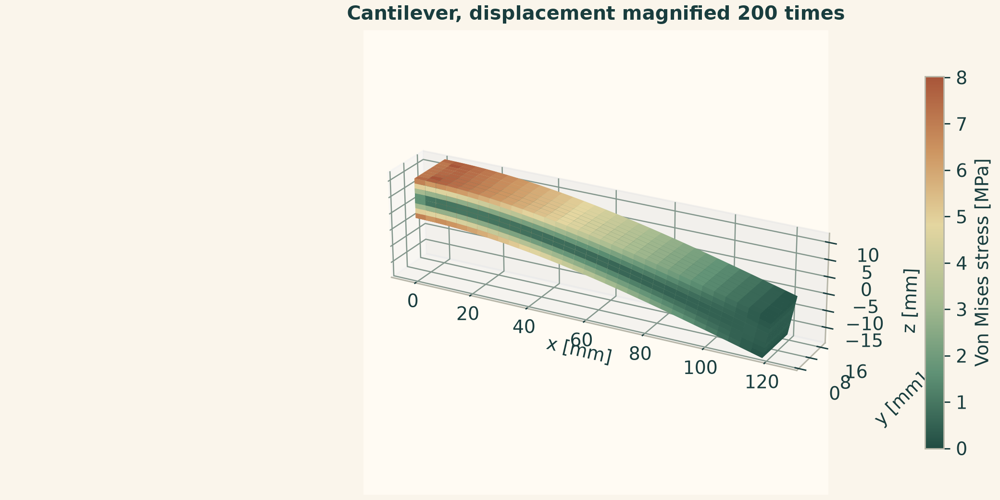
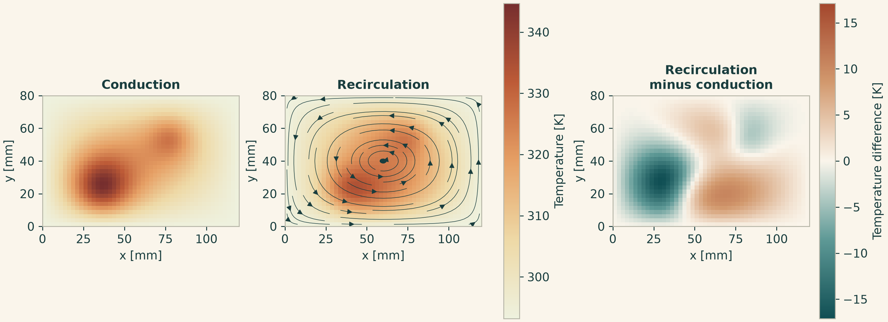
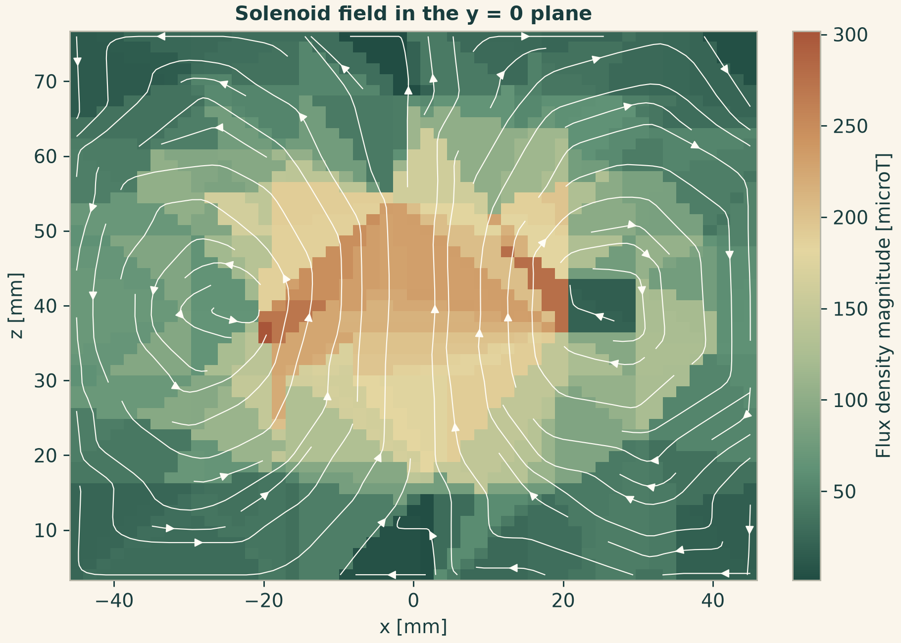

Docs › Guide
3 Three spatial studies
3.1 Three-dimensional cantilever
A rectangular solid is fixed at \(x=0\) and loaded on the opposite face. The force is distributed as a surface traction in Pa, with \(t_z=-F/(wh)\). Q2 elements use a second-degree tensor-product displacement basis on the structured hexahedra. A nodal field carries three displacement components. Stress is a derived field with its own evaluation rule. Sample the centerline and a section inside the body in world coordinates.
from pathlib import Path
import numpy as np
import matplotlib.pyplot as plt
import onesimulation_plot_theme as theme
from onesim.cad.d3 import Box
from onesim.materials import IsotropicSolid
from onesim.meshing import StructuredHexahedralMesher
from onesim.numerics import Numerics
from onesim.numerics.fem import FiniteElement, Lagrange
from onesim.numerics.linear import SparseDirect
from onesim.physics.solid_mechanics import (
FixedDisplacement, LinearElasticity, Traction, TractionFree,
)
from onesim.simulation import Problem, Simulation
L, W, H = 0.120, 0.018, 0.012 # m
E, nu, force = 70e9, 0.30, 30.0 # Pa, 1, N
material = IsotropicSolid(
density=2700.0, specific_heat_capacity=900.0, thermal_conductivity=200.0,
youngs_modulus=E, poisson_ratio=nu, thermal_expansion_coefficient=23e-6,
)
def solve_beam(cells):
box = Box(length=L, width=W, height=H)
model = LinearElasticity(domain=box.volume, material=material)
b = box.boundaries
problem = Problem(
name="Cantilever", geometry=box, physics=(model,),
boundary_conditions=(
FixedDisplacement(boundary=b.x_min, physics=model, value=(0, 0, 0)),
Traction(boundary=b.x_max, physics=model, value=(0, 0, -force/(W*H))),
TractionFree(boundary=b.all - b.x_min - b.x_max, physics=model),
),
)
mesh = StructuredHexahedralMesher(cells=cells).generate(box)
sim = Simulation(
problem=problem, mesh=mesh,
numerics=Numerics(
spatial=FiniteElement(element=Lagrange(order=2)),
linear_solver=SparseDirect(),
),
)
sim.validate().require_valid()
return model, sim.solve_stationary()
x = np.linspace(0, L, 81)
points = np.column_stack((x, np.full_like(x, W/2), np.full_like(x, H/2)))
coarse_model, coarse = solve_beam((10, 3, 2))
model, result = solve_beam((20, 4, 3))
displacement = result.field(model.displacement)
u = displacement.evaluate(points)
coarse_tip = coarse.field(coarse_model.displacement).evaluate(points[-1:])[0, 2]
inertia = W * H**3 / 12
reference = -force * x**2 * (3*L - x) / (6*E*inertia)
assert np.isfinite(u).all() and u[-1, 2] < 0
assert np.max(np.abs(u[0])) < 1e-12
assert abs(u[-1, 2] / reference[-1] - 1) < 0.02
assert abs(coarse_tip / u[-1, 2] - 1) < 0.01
xs = np.linspace(0.15*L, 0.95*L, 60)
zs = np.linspace(0.02*H, 0.98*H, 30)
xx, zz = np.meshgrid(xs, zs)
section = np.column_stack((xx.ravel(), np.full(xx.size, W/2), zz.ravel()))
stress = result.field(model.stress).evaluate(section)
sxx = stress[:, 0].reshape(xx.shape)
assert np.isfinite(sxx).all()
limit = np.max(np.abs(sxx)) / 1e6
theme.use_theme()
fig, (ax, cut) = plt.subplots(2, 1, figsize=(8, 6), layout="constrained")
ax.plot(1e3*x, 1e3*u[:, 2], color=theme.TEAL, label="3D FEM")
ax.plot(1e3*x, 1e3*reference, "--", color=theme.COPPER, label="Beam theory")
ax.set(xlabel="x [mm]", ylabel="Vertical displacement [mm]")
ax.legend(frameon=False)
im = cut.pcolormesh(1e3*xx, 1e3*zz, sxx/1e6, shading="auto",
cmap=theme.DIVERGING, vmin=-limit, vmax=limit)
cut.set(xlabel="x [mm]", ylabel="z [mm]", title="Axial stress at mid-width")
cut.set_aspect("equal")
fig.colorbar(im, ax=cut, label="Axial stress [MPa]")
out = Path("onesim-output")
out.mkdir(exist_ok=True)
fig.savefig(out / "cantilever.svg")
plt.show()
The Euler–Bernoulli curve is an independent approximation for the centerline of a slender beam. Three-dimensional effects near the clamp and load face are expected. In the shipped notebook the load is also integrated from the assembled nodal forces, the centerline symmetry is checked, and surface stress is evaluated before drawing the deformed geometry. To reproduce its surface view, tessellate each face for display, sample stress at patch centers and displacement at patch corners, then color the displaced patches using the sampled stress. State the displacement magnification in the figure.
3.1.1 Draw the deformed surface
Run this cell directly after the cantilever example. Sample displacement at the corners of each display patch and von Mises stress at its center. Deform the corner positions with a stated visual multiplier and color them using a separate stress scale. The sampling positions are in the original configuration. The colorbar retains the original stress values after conversion to MPa.
from matplotlib.colors import Normalize
from matplotlib.ticker import MaxNLocator
from mpl_toolkits.mplot3d.art3d import Poly3DCollection
sizes = (L, W, H)
resolution = (32, 8, 8)
quads = []
for normal in range(3):
a, b = [axis for axis in range(3) if axis != normal]
aa = np.linspace(0, sizes[a], resolution[a] + 1)
bb = np.linspace(0, sizes[b], resolution[b] + 1)
for side in (0.0, sizes[normal]):
for a0, a1 in zip(aa[:-1], aa[1:]):
for b0, b1 in zip(bb[:-1], bb[1:]):
q = np.empty((4, 3))
q[:, normal] = side
q[:, a] = (a0, a1, a1, a0)
q[:, b] = (b0, b0, b1, b1)
quads.append(q)
quads = np.asarray(quads)
shape = quads.shape
surface_u = displacement.evaluate(quads.reshape(-1, 3)).reshape(shape)
mises = result.field(model.von_mises_stress).evaluate(quads.mean(axis=1))
assert np.isfinite(surface_u).all() and np.isfinite(mises).all()
assert np.min(mises) >= 0 and np.max(mises) > 0
magnification = 200.0
display_quads = 1e3 * (quads + magnification * surface_u)
fig, ax = plt.subplots(
figsize=(8, 4), subplot_kw={"projection": "3d"}, layout="constrained",
)
norm = Normalize(vmin=0, vmax=np.max(mises) / 1e6)
surface = Poly3DCollection(display_quads, cmap=theme.FIELD, norm=norm)
surface.set_array(np.asarray(mises).ravel() / 1e6)
ax.add_collection3d(surface)
ax.auto_scale_xyz(*(display_quads.reshape(-1, 3).T))
ax.set_box_aspect(np.ptp(display_quads.reshape(-1, 3), axis=0))
ax.view_init(elev=24, azim=-62)
ax.yaxis.set_major_locator(MaxNLocator(nbins=3))
ax.xaxis.labelpad = 10
ax.yaxis.labelpad = 8
ax.set(xlabel="x [mm]", ylabel="y [mm]", zlabel="z [mm]",
title=f"Cantilever, displacement magnified {magnification:g} times")
fig.colorbar(surface, ax=ax, label="Von Mises stress [MPa]", shrink=0.8)
fig.savefig(out / "cantilever-surface.png", dpi=220)
plt.show()

3.2 Heat transport with prescribed recirculation
This model solves the stationary advection–diffusion balance for temperature in a thin volume. Use a velocity tangent to the walls with zero divergence and no \(z\) component. Compare the same sources and boundary conditions with pure conduction and with circulation. Use constant \(\rho\), \(c_p\) and \(k\). IsotropicSolid supplies the coefficients to the thermal model. The velocity is a prescribed field in this study. In the recirculation panel, dark streamlines show the input velocity and the colors show the solved temperature.
from pathlib import Path
import numpy as np
import matplotlib.pyplot as plt
import onesimulation_plot_theme as theme
from scipy.special import erf
from onesim.cad.d3 import Box
from onesim.materials import IsotropicSolid
from onesim.meshing import StructuredHexahedralMesher
from onesim.numerics import Numerics
from onesim.numerics.fvm import (
CentralDifference, FiniteVolume, LeastSquaresGradient, LinearUpwind,
)
from onesim.numerics.linear import SparseDirect
from onesim.physics.heat_transfer import (
ConvectiveHeatTransfer, FixedTemperature, HeatConduction, HeatFlux,
)
from onesim.simulation import Problem, Simulation
L, W, H = 0.120, 0.080, 0.002 # m
ambient, speed, conductivity = 293.15, 0.0006, 2.0 # K, m/s, W/(m K)
sources = ((0.036, 0.024, 0.008, 1e6), (0.078, 0.054, 0.006, 8e5))
def velocity(x, y, z):
sx, sy = np.pi*x/L, np.pi*y/W
return np.column_stack((
speed*np.sin(sx)*np.cos(sy),
-speed*(W/L)*np.cos(sx)*np.sin(sy),
np.zeros_like(x),
))
def heating(x, y, z):
return sum(a*np.exp(-((x-x0)**2 + (y-y0)**2)/(2*s**2))
for x0, y0, s, a in sources)
def gaussian_integral(length, center, width):
d = np.sqrt(2) * width
return width*np.sqrt(np.pi/2) * (erf((length-center)/d) + erf(center/d))
source_power = H * sum(
a*gaussian_integral(L, x0, s)*gaussian_integral(W, y0, s)
for x0, y0, s, a in sources
)
def solve_heat(cells, *, circulating):
box = Box(length=L, width=W, height=H)
material = IsotropicSolid(
density=1000.0, specific_heat_capacity=1000.0,
thermal_conductivity=conductivity, youngs_modulus=1e9,
poisson_ratio=0.3, thermal_expansion_coefficient=0.0,
)
args = dict(domain=box.volume, material=material, heating=heating)
model = (ConvectiveHeatTransfer(velocity=velocity, **args)
if circulating else HeatConduction(**args))
b = box.boundaries
problem = Problem(
name="Recirculation" if circulating else "Conduction",
geometry=box, physics=(model,),
boundary_conditions=(
FixedTemperature(physics=model, value=ambient,
boundary=b.x_min | b.x_max | b.y_min | b.y_max),
HeatFlux(physics=model, value=0.0, boundary=b.z_min | b.z_max),
),
)
mesh = StructuredHexahedralMesher(cells=cells).generate(box)
sim = Simulation(
problem=problem, mesh=mesh,
numerics=Numerics(
spatial=FiniteVolume(
gradient=LeastSquaresGradient(), diffusion=CentralDifference(),
convection=LinearUpwind() if circulating else None,
),
linear_solver=SparseDirect(),
),
)
sim.validate().require_valid()
result = sim.solve_stationary()
field = result.field(model.temperature)
xyz = np.asarray(field.space.dof_coordinates)
T = np.asarray(field.values)
assert np.isfinite(T).all() and T.min() >= ambient - 1e-8
# Bound FV operator used for a discrete power balance.
op = result.operators[model.model_id]
face_power = op.conservative_face_fluxes(T)
outgoing = float(np.sum(op.geometry.face_incidence @ face_power))
assert abs(outgoing/source_power - 1) < 2e-4
order = np.lexsort((xyz[:, 0], xyz[:, 1]))
shape = (cells[1], cells[0]) # one cell in z
X = xyz[order, 0].reshape(shape)
Y = xyz[order, 1].reshape(shape)
return X, Y, T[order].reshape(shape)
X0, Y0, still = solve_heat((48, 32, 1), circulating=False)
X, Y, moving = solve_heat((48, 32, 1), circulating=True)
np.testing.assert_allclose(X, X0)
np.testing.assert_allclose(Y, Y0)
difference = moving - still
assert np.max(np.abs(difference)) > 5.0
limits = (min(still.min(), moving.min()), max(still.max(), moving.max()))
theme.use_theme()
fig, axes = plt.subplots(1, 3, figsize=(11, 4), layout="constrained")
for ax, T, title in zip(axes[:2], (still, moving), ("Conduction", "Recirculation")):
im = ax.pcolormesh(1e3*X, 1e3*Y, T, shading="nearest", cmap=theme.THERMAL,
vmin=limits[0], vmax=limits[1])
ax.set_title(title)
vx, vy, _ = velocity(X.ravel(), Y.ravel(), np.zeros(X.size)).T
axes[1].streamplot(1e3*X[0], 1e3*Y[:, 0], vx.reshape(X.shape),
vy.reshape(Y.shape), color=theme.INK, linewidth=0.45,
density=0.65)
fig.colorbar(im, ax=axes[:2].tolist(), label="Temperature [K]")
limit = np.max(np.abs(difference))
im = axes[2].pcolormesh(1e3*X, 1e3*Y, difference, shading="nearest",
cmap=theme.DIVERGING, vmin=-limit, vmax=limit)
axes[2].set_title("Recirculation\nminus conduction")
fig.colorbar(im, ax=axes[2], label="Temperature difference [K]")
for ax in axes:
ax.set(xlabel="x [mm]", ylabel="y [mm]", aspect="equal")
out = Path("onesim-output")
out.mkdir(exist_ok=True)
fig.savefig(out / "recirculation.svg")
plt.show()

For a refinement check, call the same solver at a second resolution. Interpolate the fine temperature at the coarse centers inside its support before computing RMS and maximum differences. For a conductive flux arrow, evaluate result.field(model.heat_flux) at the physical sample points. A conservative balance uses the assembled face powers. Summing their cell incidences cancels interior faces. The face powers include the transport terms used by the FV equation. The sampled Fourier flux has units W/m\(^2\) and describes conduction. They answer different physical questions. Access to result.operators is specific to the bound discretization and belongs in a clearly identified diagnostic cell.
3.3 Magnetostatics of a homogenized solenoid
The winding is a resolved annular volume with an azimuthal impressed current density. The exterior cylinder approximates a finite surrounding domain. The H(curl) basis gives a vector potential \(\mathbf A\) whose curl yields \(\mathbf B\). The weak Coulomb gauge supplies a constraint. Use an explicit magnetic boundary, since domain truncation affects the field. The independent checks below use \(\mathbf B=\mu\mathbf H\) and linear current scaling under constant permeability.
from dataclasses import replace
from pathlib import Path
import numpy as np
import matplotlib.pyplot as plt
import onesimulation_plot_theme as theme
from onesim.cad.d3 import Cylinder
from onesim.materials import VacuumPermeability
from onesim.meshing import LocalRefinement, TetrahedralMesher
from onesim.numerics import Numerics
from onesim.numerics.fem import FiniteElement, Nedelec
from onesim.numerics.linear import SparseDirect
from onesim.physics.magnetostatics import (
CoulombGauge, MagneticInsulation, MagneticVectorPotential,
Magnetostatics, SolenoidCurrent,
)
from onesim.simulation import Problem, Simulation
geometry = Cylinder(radius=0.05, length=0.08)
coil = SolenoidCurrent(
inner_radius=0.02, outer_radius=0.03, length=0.02,
center=(0, 0, 0.04), turns=10, current=1.0,
)
mesh = TetrahedralMesher(
target_size=0.017, embedded_regions=(coil.support,),
refinements=(LocalRefinement(region=coil.support, target_size=0.008),),
).generate(geometry)
mu = VacuumPermeability()
def solve_coil(source):
model = Magnetostatics(
domain=geometry.volume, permeability=mu, current_sources=(source,),
formulation=MagneticVectorPotential(gauge=CoulombGauge()),
)
sim = Simulation(
problem=Problem(
name="Homogenized solenoid", geometry=geometry, physics=(model,),
boundary_conditions=(
MagneticInsulation(boundary=geometry.boundaries.all, physics=model),
),
),
mesh=mesh,
numerics=Numerics(spatial=FiniteElement(element=Nedelec(order=1)),
linear_solver=SparseDirect()),
)
sim.validate().require_valid()
return model, sim.solve_stationary()
model, result = solve_coil(coil)
double_model, double_result = solve_coil(replace(coil, current=2.0))
B_field = result.field(model.magnetic_flux_density)
H_field = result.field(model.magnetic_field_strength)
test_points = np.array([[0, 0, 0.04], [0.01, 0.005, 0.045], [0.035, 0, 0.06]])
B0 = B_field.evaluate(test_points)
H0 = H_field.evaluate(test_points)
B2 = double_result.field(double_model.magnetic_flux_density).evaluate(test_points)
assert 0 < len(mesh.region_cells(coil.support)) < mesh.cell_count
assert B0[0, 2] > 0
assert np.linalg.norm(B0 - float(mu.evaluate())*H0) / np.linalg.norm(B0) < 1e-12
assert np.linalg.norm(B2 - 2*B0) / np.linalg.norm(2*B0) < 1e-8
x, z = np.linspace(-0.045, 0.045, 51), np.linspace(0.004, 0.076, 51)
X, Z = np.meshgrid(x, z)
points = np.column_stack((X.ravel(), np.zeros(X.size), Z.ravel()))
B = B_field.evaluate(points).reshape(X.shape + (3,))
assert np.isfinite(B).all()
theme.use_theme()
fig, ax = plt.subplots(figsize=(7, 5), layout="constrained")
im = ax.pcolormesh(1e3*X, 1e3*Z, 1e6*np.linalg.norm(B, axis=-1),
shading="auto", cmap=theme.FIELD)
ax.streamplot(1e3*x, 1e3*z, B[..., 0], B[..., 2],
density=0.8, color=theme.STREAMLINE, linewidth=0.6)
ax.set(xlabel="x [mm]", ylabel="z [mm]", aspect="equal",
title="Solenoid field in the y = 0 plane")
fig.colorbar(im, ax=ax, label="Flux density magnitude [microT]")
out = Path("onesim-output")
out.mkdir(exist_ok=True)
fig.savefig(out / "solenoid.svg")
plt.show()

The streamlines display the projection onto the cut plane and the colors show the magnitude of all three vector components. Mark the projected winding cross-sections in a publication figure. The shipped notebook adds a weak gauge residual check and exports all three vector components with the source-region cell indices. Reuse a mesh for a current-only change with the same source support. If you move or resize the winding, regenerate the mesh with the new embedded region. Vary the outer cylinder and the local mesh size separately to distinguish truncation error from discretization error.